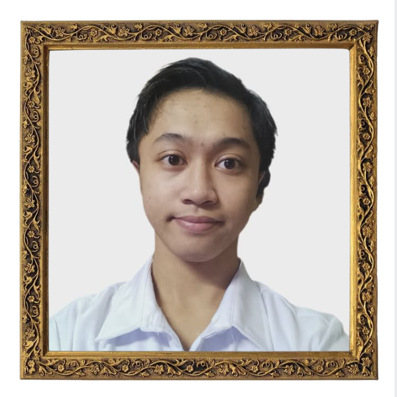

About Me
The Writer

Hello there. My name is Timothy!
I spend a lot of time in introspection, often finding myself quietly observing things around me. I started writing because I wanted to—to be able to express thoughts that are sometimes difficult to say out loud. Over time, I find my own work amusing to revisit, as if it was not written by me.
I write what I call u-tots(uttered-thoughts)—pieces that reflect emotions, moment or even a question. They are personal, but I hope they could remain to something others can relate to.